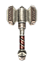

Filters:
Agamemnon's Scepter
227 - 250 Damage
Speed: Slow
10.0% Chance of 150 Bonus Damage
10.0% Chance of 100% Physical Resistance
32% Elemental Resistance
+30 Strength
+15% Health
+50% Health Regeneration
+50% Energy Regeneration
+20% Offensive Ability
+20% Defensive Ability
+15% Damage to Demons
+15% Damage to Undead
LVL 47, STR 524, DEX 151
Ancient Tartessian Mace
78 - 102 Damage
Speed: Slow
Difficulty : Normal
30% Cold Resistance
+200 Health
+150 Energy
LVL 28, STR 267, DEX 78
Ancient Tartessian Mace
154 - 186 Damage
Speed: Slow
Difficulty : Epic
60% Cold Resistance
+350 Health
+250 Energy
LVL 42, STR 453, DEX 102
Ancient Tartessian Mace
225 - 284 Damage
Speed: Slow
Difficulty : Legendary
90% Cold Resistance
+500 Health
+350 Energy
LVL 52, STR 577, DEX 118
Antediluvian Edge Mace
78 - 102 Damage
Speed: Average
Difficulty : Normal
33 Frostburn Damage per Second
+0% Frostburn Damage with +33% Improved Duration
33 Poison Damage per Second
+0% Poison Damage with +33% Improved Duration
Bonus to All Pets:
20 Poison Damage per Second
+0% Poison Damage with +33% Improved Duration
LVL 28, STR 290, DEX 81
Antediluvian Edge Mace
154 - 186 Damage
Speed: Average
Difficulty : Epic
66 Frostburn Damage per Second
+0% Frostburn Damage with +66% Improved Duration
66 Poison Damage per Second
+0% Poison Damage with +66% Improved Duration
Bonus to All Pets:
40 Poison Damage per Second
+0% Poison Damage with +66% Improved Duration
LVL 42, STR 476, DEX 105
Antediluvian Edge Mace
225 - 284 Damage
Speed: Average
Difficulty : Legendary
100 Frostburn Damage per Second
+0% Frostburn Damage with +100% Improved Duration
100 Poison Damage per Second
+0% Poison Damage with +100% Improved Duration
Bonus to All Pets:
60 Poison Damage per Second
+0% Poison Damage with +100% Improved Duration
LVL 52, STR 600, DEX 121
Arcadion Judgement
147 - 171 Damage
Speed: Slow
14.0% Chance of 3.0 - 5.0 second(s) of Confusion
+21 Strength
+21 Intelligence
+21 Dexterity
+140 Energy
+20% Attack Speed
-20% Energy Cost
LVL 37, STR 416, DEX 132
Arcane Purifier
11 - 17 Damage
Speed: Slow
Set : Agent of the Order
Chance for one of the following:
26 - 29 Fire Damage
26 - 34 Cold Damage
26 - 34 Cold Damage
20 - 40 Cold Damage
10% Reduction to Enemy's Health
+50 Damage to Telkines
+50 Damage to Titans
LVL 40, STR 416, DEX 132
Areithous' Mace
227 - 250 Damage
Speed: Slow
25% Chance of:
+75% Physical Damage
240 Bleeding Damage over 3.0 Seconds
+80% Bleeding Damage
125 Bonus Damage
50% Chance to Fumble attacks for 2.0 Seconds
85 Reduced Armor for 2.0 Seconds
+100 Offensive Ability
+100 Defensive Ability
+11% Total Speed
7% Chance to Dodge Attacks
LVL 49, STR 524, DEX 151
Blackrock Mallet
63 - 89 Damage
Speed: Slow
+15% Physical Damage
57 - 135 Burn Damage over 3.0 Seconds
+15% Fire Damage
+15% Burn Damage
30.0% Chance of 30 - 50 Bonus Damage
10 - 19 Fire Damage
+19 Strength
-10% Strength Requirement for Armor
-10% Strength Requirement for Shields
+2 to Staggering Force
LVL 27, STR 266, DEX 77
Blight
125 - 151 Damage
Speed: Slow
180 - 240 Poison Damage over 3.0 Seconds
+25% Poison Damage
15% Chance of:
35 Reduced Resistances for 3.0 Seconds
35% Slowed for 3.0 Seconds
32% Poison Resistance
+44 Offensive Ability
Grants Skill : School of Poison
LVL 35, STR 392, DEX 128
Bludgeon of True Sight
195 - 221 Damage
Speed: Slow
Set : Raiment of the Baker Street Sage
3.0% Chance of +150% Physical Damage
+20% Intelligence
+100% Energy Regeneration
+100% Defensive Ability
LVL 35
Bug

237 - 302 Damage
Speed: Slow
60 Elemental Damage
+24% Strength
+24% Intelligence
+24% Dexterity
+24% Health
+24% Energy
LVL 62, STR 626, DEX 168
Bone Crusher
327 - 393 Damage
Speed: Very Slow
10% Chance of:
1.0 - 2.0 second(s) of Stun
40% Slowed for 2.0 Seconds
5.0 second(s) of Skill Disruption
+25% Armor Protection
50% Slow Resistance
+200 Health
+40% Damage to Undead
+3 to Fissure
Grants Skill : Crushing Blow (Activated on attack)
This violent blast creates a line of seismic power to flatten your enemies to the ground with rubble.
5.0 Second(s) Recharge
1 Projectile(s)
2.0 Meter Radius
100% Chance to pass through Enemies
52 - 75 Damage
50% Reduction to Enemy's Health
1.5 second(s) of Stun
Bonus to All Pets:
40 Damage
LVL 62, STR 639, DEX 126
Bristlebash
27 - 42 Damage
Speed: Slow
+20% Physical Damage
Chance for one of the following:
5 - 13 Bonus Damage
5 - 13 Piercing Damage
9% Poison Resistance
+27 Health
+12 Offensive Ability
+10% Damage to Beasts
LVL 7, STR 106, DEX 57
Cerberus' Bone
78 - 97 Damage
Speed: Slow
+15% Strength
+15% Health
+15% Offensive Ability
+15% Defensive Ability
+15% Attack Speed
Grants Skill : Bone Cage
LVL 29, STR 306, DEX 82
Coven Nex
216 - 245 Damage
Speed: Slow
+10% Physical Damage
+10% Total Damage
160 Poison Damage over 4.0 Seconds
160 Vitality Decay over 4.0 Seconds
6% Chance of:
300 Bonus Damage
1.0 - 3.0 second(s) of Stun
20 Reduced Resistances for 4.0 Seconds
50% Skill Disruption Protection
+28 Strength
+25% Attack Speed
+15% Damage to Undead
+15% Damage to Demons
+15% Damage to Titans
+1 to all Skills
LVL 45, STR 476, DEX 142
Demeter's Sorrow
196 - 220 Damage
Speed: Slow
15.0% Chance of +100% Cold Damage
70 Instant Poison Damage
160 Reduced Armor for 3.0 Seconds
18 Reduced Damage for 2.0 Seconds
18 Reduced Resistances for 2.0 Seconds
10.0% Chance of 3.0 second(s) of Freeze
+24 Intelligence
+24 Dexterity
+30% Attack Speed
+30% Casting Speed
+3 to Rain
+3 to Torrential Flow
LVL 43, STR 440, DEX 136
Doom Herald
105 - 127 Damage
Speed: Slow
25 Reduced Armor for 3.0 Seconds
+19 Strength
+19 Intelligence
+19 Dexterity
+2 to Rubblemaker
Grants Skill : Deathchill Aura (Activated when equipped)
A deathly chill radiates from the character slowing the attack and movement of enemies as it diminishes their life.
4.0 Second(s) Recharge
1 Active Energy Cost per Second
1.0 Second Duration
3.4 Meter Radius
3 - 7% Reduction to Enemy's Health
-21% Total Speed
LVL 31, STR 356, DEX 122
Dvergr-Forged Edge Mace
83 - 112 Damage
Speed: Slow
Difficulty : Normal
+10% Attack Speed
+30% Damage to Constructs
+30% Damage to Devices
+2 to Conjured Steel
Grants Skill : Runeword: Explode
LVL 34, STR 329, DEX 86
Dvergr-Forged Edge Mace
156 - 210 Damage
Speed: Slow
Difficulty : Epic
+15% Attack Speed
+30% Damage to Constructs
+30% Damage to Devices
+3 to Conjured Steel
Grants Skill : Runeword: Explode
LVL 46, STR 500, DEX 108
Dvergr-Forged Edge Mace
229 - 309 Damage
Speed: Slow
Difficulty : Legendary
+20% Attack Speed
+30% Damage to Constructs
+30% Damage to Devices
+4 to Conjured Steel
Grants Skill : Runeword: Explode
LVL 58, STR 647, DEX 127
Figurehead of Naglfar
235 - 319 Damage
Speed: Slow
330 Frostburn Damage over 3.0 Seconds
330 Vitality Decay over 3.0 Seconds
10.0% Chance of 50% Reduction to Enemy's Health
50 Vitality Damage
45% Cold Resistance
45% Vitality Damage Resistance
250 Frostburn Retaliation over 5.0 Seconds
250 Vitality Decay Retaliation over 5.0 Seconds
+10% Energy
+30% Less Damage from Ghosts
+2 to all skills in Necromancy Mastery
+2 to all skills in Aqua Mastery
LVL 64, STR 639, DEX 126
Fist of the Fiery Legion
281 - 314 Damage
Speed: Slow
Set : Armament of the Fiery Legion
20.0% Chance of +100% Physical Damage
45% reduced Defensive Ability for 3.0 Seconds
+5% Armor Protection
+33 Strength
Grants Skill : Rally (Activated on low health)
The resolute call of your horn can turn the tide of battle, inspiring all in its range to fight with renewed vitality.
45.0 Second(s) Recharge
59 Energy Cost
10.0 Second Duration
10.0 Meter Radius
820 Health Restored
+150% Health Regeneration
+150% Energy Regeneration
+7% Total Speed
17 Armor
LVL 48, STR 584, DEX 161
Folg
78 - 102 Damage
Speed: Slow
Difficulty : Normal
+6% Strength
+6% Dexterity
Grants Skill : Thunderclap (Activated on attack)
Releases an electrical ring of energy that stuns enemies within its radius.
8.0 Second(s) Recharge
41 Energy Cost
6.0 Meter Radius
18 - 68 Lightning Damage
1.5 second(s) of Stun
LVL 28, STR 290, DEX 80
Folg
154 - 186 Damage
Speed: Slow
Difficulty : Epic
+8% Strength
+8% Dexterity
Grants Skill : Thunderclap (Activated on attack)
Releases an electrical ring of energy that stuns enemies within its radius.
8.0 Second(s) Recharge
49 Energy Cost
6.0 Meter Radius
33 - 128 Lightning Damage
1.5 second(s) of Stun
LVL 42, STR 446, DEX 137
Folg
225 - 284 Damage
Speed: Slow
Difficulty : Legendary
+10% Strength
+10% Dexterity
Grants Skill : Thunderclap (Activated on attack)
Releases an electrical ring of energy that stuns enemies within its radius.
8.0 Second(s) Recharge
60 Energy Cost
6.0 Meter Radius
55 - 213 Lightning Damage
1.5 second(s) of Stun
LVL 52, STR 560, DEX 157
Gaian Branch
30 Damage
Speed: Average
Difficulty : Normal
+8.0 Health Regeneration per second
+8.0 Energy Regeneration per second
Grants Skill : Mend Wounds
LVL 28, STR 1, DEX 80, INT 283
Gaian Branch
60 Damage
Speed: Average
Difficulty : Epic
+16.0 Health Regeneration per second
+16.0 Energy Regeneration per second
Grants Skill : Mend Wounds
LVL 42, STR 1, DEX 104, INT 469
Gaian Branch
90 Damage
Speed: Average
Difficulty : Legendary
+24.0 Health Regeneration per second
+24.0 Energy Regeneration per second
Grants Skill : Mend Wounds
LVL 52, STR 1, DEX 120, INT 593
Giant's Tooth
249 - 337 Damage
Speed: Slow
+20% Physical Damage
50% Chance of :
30% Reduced Resistances for 3.0 Seconds
30% Chance to Fumble attacks for 3.0 Seconds
60% Chance of Impaired Aim for 3.0 Seconds
10% Reduction to Enemy's Health
+40% Strength
+30% Damage to Giants
LVL 63, STR 655, DEX 128
Glacial Maul
250 - 282 Damage
Speed: Slow
10.0% Chance of +250% Cold Damage
15% Chance of:
40 Reduced Resistances for 2.0 Seconds
2.0 - 4.0 second(s) of Freeze
37 - 47 Cold Damage
41% Cold Resistance
+33% Energy Regeneration
-10% Reduction to all Requirements
+1 to all skills in Aqua Mastery
LVL 46, STR 524, DEX 151
Goldfang Mace
78 - 102 Damage
30% Pierce Ratio
Speed: Slow
Difficulty : Normal
15 Piercing Damage
100 Reduced Armor for 1.0 Seconds
Grants Skill : Enrage (Activated upon casting a debuff)
Monsters don't take your attempts to lower their guard ligthly, resulting in berserk fury.
20.0 Second(s) Recharge
8.0 Second Duration
8.0 Meter Radius
+15% Total Damage
+15% Total Speed
-15% Physical Resistance
-15% Pierce Resistance
-15% Elemental Resistance
LVL 28, STR 283, DEX 80
Goldfang Mace
154 - 186 Damage
30% Pierce Ratio
Speed: Slow
Difficulty : Epic
30 Piercing Damage
200 Reduced Armor for 1.0 Seconds
Grants Skill : Enrage (Activated upon casting a debuff)
Monsters don't take your attempts to lower their guard ligthly, resulting in berserk fury.
20.0 Second(s) Recharge
8.0 Second Duration
8.0 Meter Radius
+15% Total Damage
+15% Total Speed
-20% Physical Resistance
-20% Pierce Resistance
-20% Elemental Resistance
LVL 42, STR 469, DEX 104
Goldfang Mace
225 - 284 Damage
30% Pierce Ratio
Speed: Slow
Difficulty : Epic
45 Piercing Damage
300 Reduced Armor for 1.0 Seconds
Grants Skill : Enrage (Activated upon casting a debuff)
Monsters don't take your attempts to lower their guard ligthly, resulting in berserk fury.
20.0 Second(s) Recharge
8.0 Second Duration
8.0 Meter Radius
+15% Total Damage
+15% Total Speed
-25% Physical Resistance
-25% Pierce Resistance
-25% Elemental Resistance
LVL 52, STR 593, DEX 120
Grim Companion
50 - 65 Damage
Speed: Slow
120 Life Leech over 3.0 Seconds
120 Energy Leech over 3.0 Seconds
+20% Intelligence
+150% Energy Regeneration
+15% Increased Experience
-18% Recharge
+25% Damage to Humans
+15% Less Damage from Humans
+6 to Insignia of Anguish
+6 to Dreadful Impact
Bonus to All Pets:
90 Frostburn Damage over 3.0 Seconds
90 Vitality Decay over 3.0 Seconds
LVL 41, STR 1, DEX 139, INT 475
Hammer of the Sun
39 - 54 Damage
Speed: Slow
84 - 204 Burn Damage over 3.0 Seconds
+25% Fire Damage
+25% Burn Damage
37% Fire Resistance
+71 Health
+20% Health Regeneration
+10% Increased Experience
Grants Skill : Sunlight (Activated upon taking ranged damage)
Bring forth intense sunlight that burns anything standing in its area of effect.
7.0 Second(s) Recharge
7.0 Second Duration
2.5 Meter Radius
240 Burn Damage per Second
LVL 35, STR 392, DEX 128
Hammer of the Venomancer

162 - 198 Damage
Speed: Slow
218 Poison Damage over 3.0 Seconds
+25% Instant Poison Damage
+25% Poison Damage
10.0% Chance of 50% Reduction to Enemy's Health
10.0% Chance to Fumble attacks for 3.0 Seconds
10% Reduction in Poison Duration
+30 Intelligence
Grants Skill : Poison Blast (Activated on attack)
Every few attacks will release a large burst of poison.
10.0 Second(s) Recharge
30 Energy Cost
5.0 Meter Radius
130 Poison Damage over 3.0 Seconds
60 Instant Poison Damage
35 Reduced Physical Damage for 5.0 Seconds
LVL 48, STR 422, DEX 133
Hand of Hephaestus
240 - 263 Damage
Speed: Slow
Set : Might of Hephaestus
294 Burn Damage over 3.0 Seconds
+50% Fire Damage
+50% Burn Damage
+5% Armor Protection
+155 Health
+45% Health Regeneration
+15% Attack Speed
+1 to all skills in Lifegiving Mastery
+1 to all skills in Geomancy Mastery
LVL 48, STR 542, DEX 154
Hand of Kairos
36 - 50 Damage
Speed: Slow
+20% Physical Damage
20.0% Chance of 40% Slowed for 2.0 Seconds
+20% Health Regeneration
+10% Attack Speed
+10% Movement Speed
LVL 14, STR 170, DEX 65
Headhunter's Pride
163 - 221 Damage
Speed: Slow
240 - 360 Bleeding Damage over 3.0 Seconds
+50% Bleeding Damage
120 - 180 Poison Damage over 3.0 Seconds
+50% Poison Damage
15% of Attack damage converted to Health
+50 Defensive Ability
+20% Attack Speed
+33% Damage to Beastmen
+2 to all skills in Science Mastery
Grants Skill : Ensnare
LVL 52, STR 515, DEX 110
Horn of Tiamat
250 - 282 Damage
Speed: Slow
165 - 495 Bleeding Damage over 3.0 Seconds
+100% Bleeding Damage
44% Pierce Resistance
64% Poison Resistance
+28 Strength
+175 Health
+50% Health Regeneration
+50% Energy Regeneration
+54 Offensive Ability
LVL 47, STR 524, DEX 151
Hydraulic Hammer
235 Damage
Speed: Average
+50% Physical Damage
60% Stun Resistance
60% Slow Resistance
+40 Strength
+40% Casting Speed
+25% Less Damage from Constructs
+25% Less Damage from Devices
+4 to Rubblemaker
+4 to Technological Advancement
Grants Skill : Slam
LVL 49, STR 566, DEX 158
Ichthian Whomper
60 - 80 Damage
Speed: Slow
Difficulty : Normal
10% Chance of:
150% Energy Drain (100% of lost Energy as Damage)
2.0 second(s) of Stun
Grants Skill : Rain Dances
LVL 20, STR 218, DEX 71
Ichthian Whomper
138 - 175 Damage
Speed: Slow
Difficulty : Epic
10% Chance of:
150% Energy Drain (125% of lost Energy as Damage)
2.0 second(s) of Stun
Grants Skill : Rain Dances
LVL 40, STR 410, DEX 131
Ichthian Whomper
218 - 281 Damage
Speed: Slow
Difficulty : Legendary
10% Chance of:
150% Energy Drain (150% of lost Energy as Damage)
2.0 second(s) of Stun
Grants Skill : Rain Dances
LVL 50, STR 530, DEX 152
Iris
262 - 284 Damage
Speed: Slow
+15% Total Damage
70 Energy Leech per Second
44 - 60 Elemental Damage
33% Elemental Resistance
+33 Dexterity
+30% Attack Speed
-20% Energy Cost
Grants Skill : Distortion Field
LVL 50, STR 584, DEX 161
Kalar's Convincer
114 - 139 Damage
Speed: Slow
15.0% Chance of +200% Physical Damage
30 Bonus Damage
10.0% Chance of 1.0 - 2.0 second(s) of Stun
+33 Offensive Ability
+33 Defensive Ability
+20% Attack Speed
+2 to Nerves of Steel
LVL 34, STR 374, DEX 125
Karrok
54 - 64 Damage
Speed: Average
+20% Physical Damage
90 - 180 Bleeding Damage for 3.0 Seconds
20% Reduction to Enemy's Health
10% of Attack damage converted to Health
20% Bleeding Resistance
20% Vitality Damage Resistance
15% Health Reduction Retaliation
-20% Health
+80 Offensive Ability
+25% Attack Speed
+3 to Mutagen Prototype
+3 to Mutilating Edge
LVL 32, STR 298, DEX 81
Kiss of Lethe
75 - 91 Damage
Speed: Slow
+15% Physical Damage
+40% Life Leech
15% Chance for one of the following:
2.0 second(s) of Sleep
2.0 second(s) of Stun
2.0 second(s) of Confusion
8% of Attack damage converted to Health
+55 Offensive Ability
+25% Attack Speed
LVL 31, STR 306, DEX 82
Kraken's Fist
227 - 250 Damage
Speed: Slow
12.0% Chance of +150% Physical Damage
12.0% Chance of +150% Elemental Damages
42 Bonus Damage
20 - 45 Cold Damage
20 - 45 Lightning Damage
10.0% Chance of 3.0 second(s) of Stun
30% Cold Resistance
30% Lightning Resistance
+30 Strength
+30 Dexterity
+140 Health
+80 Offensive Ability
LVL 51, STR 542, DEX 154
Lei Gong's Winged Mace
53 - 70 Damage
Speed: Slow
8 - 56 Electrical Burn Damage over 4.0 Seconds
10.0% Chance of +100% Lightning Damage
5 - 30 Lightning Damage
15% Cold Resistance
15% Lightning Resistance
+40 Offensive Ability
LVL 22, STR 234, DEX 73
Lycergus' Wisdom
36 - 54 Damage
Speed: Slow
+25% Physical Damage
+50% Health Regeneration
+41 Energy
+50% Energy Regeneration
-20% Strength Requirement for all Weapons
-20% Strength Requirement for Armor
-20% Strength Requirement for Shields
LVL 15, STR 170, DEX 65
Lykaion Malleus

206 - 236 Damage
Speed: Slow
+50% Lightning Damage
+50% Electrical Burn Damage
19 - 179 Lightning Damage
15 Reduced Resistances for 3.0 Seconds
37% Cold Resistance
48% Lightning Resistance
-15% Recharge
-15% Energy Cost
LVL 39, STR 440, DEX 136
Melon Hammer
140 - 161 Damage
Speed: Slow
15 Bonus Damage
30 Piercing Damage
20.0% Chance of 1.0 - 2.0 second(s) of Stun
+220 Health
+46 Defensive Ability
+20% Attack Speed
+1 to all skills in Geomancy Mastery
+1 to all skills in Barbarism Mastery
LVL 38, STR 416, DEX 132
Menestheus' Rage

240 - 267 Damage
Speed: Slow
+20% Physical Damage
+20% Vitality Damage
45 Vitality Damage
+10% Shield Block Chance
-75 Offensive Ability
+350 Defensive Ability
+20% Attack Speed
+1 to all skills in Lifegiving Mastery
+1 to all skills in Chaos Mastery
LVL 50, STR 482, DEX 144
Meteorite
252 - 287 Damage
Speed: Slow
+15% Physical Damage
210 Burn Damage over 3.0 Seconds
+25% Fire Damage
+25% Burn Damage
150 Burn Retaliation over 3.0 Seconds
+25% Burn Retaliation
10.0% Chance of 1.5 Stun Retaliation
+10% Energy
+180 Defensive Ability
+2 to Celestial Quintessence
Grants Skill : Seismic Strength
LVL 60, STR 590, DEX 83
Might of Brennus
31 - 54 Damage
Speed: Slow
+20% Physical Damage
15% Chance for one of the following:
45 Bleeding Damage over 3.0 Seconds
1.0 - 2.0 second(s) of Stun
+16 Strength
+17 Defensive Ability
+15% Attack Speed
LVL 11, STR 138, DEX 61
Morbius, the Ramrod
228 - 260 Damage
Speed: Slow
+10% Physical Damage
+10% Instant Poison Damage
+10% Poison Damage
35 - 65 Piercing Damage
+28 Strength
+50% Health Regeneration
20% less Energy Reserved
+220 Offensive Ability
+20% Attack Speed
Grants Skill : Acidic Spurt (Activated on attack)
A spurt of poison temporarily blinds enemies and causes damage over time.
8.0 Second(s) Recharge
75 Energy Cost
330 Poison Damage over 6.0 Seconds
4.0 second(s) of Confusion
30% Slower Movement for 6.0 Seconds
LVL 44, STR 476, DEX 142
Nature's Revenge

151 - 178 Damage
Speed: Slow
50 Elemental Damage
44 Instant Poison Damage
44 Vitality Damage
20% Reduction in Poison Duration
20% Reduction in Bleeding Duration
+12.0 Health Regeneration per second
+50% Health Regeneration
Bonus to All Pets:
+25% Elemental Damages
+25% Lightning Damage
+25% Poison Damage
+4.0 Health Regeneration per second
LVL 49, STR 426, DEX 132
Orion's Mace
240 - 263 Damage
Speed: Slow
60 Bleeding Damage over 3.0 Seconds
+30% Bleeding Damage
+30% Elemental Damages
60 Poison Damage over 3.0 Seconds
+30% Poison Damage
55 - 65 Elemental Damage
20% Bleeding Resistance
20% Elemental Resistance
20% Poison Resistance
+1 to all Skills
Grants Skill : Psionic Touch
LVL 48, STR 524, DEX 151
Philip's Swift Justice
239 - 247 Damage
20% Pierce Ratio
Speed: Slow
33.0% Chance of +150% Pierce Damage
10% of Attack damage converted to Health
25% Bleeding Resistance
+35% Attack Speed
+25% Damage to Beastmen
+25% Damage to Demons
+4 to Siphon
+4 to Exertion
Grants Skill : Calculated Strike
LVL 47, STR 120, DEX 480
Plague Feast
39 - 54 Damage
Speed: Slow
42 - 72 Poison Damage over 3.0 Seconds
9 - 27 Life Leech over 3.0 Seconds
7 Bonus Damage
+1 to Poison Weapons
+1 to all skills in Science Mastery
Bonus to All Pets:
24 - 36 Poison Damage over 3.0 Seconds
10 Instant Poison Damage
5% of Attack damage converted to Health
LVL 18, STR 202, DEX 69
Polyphemus' Tenderizer
28 - 46 Damage
Speed: Slow
Difficulty : Normal
40% Chance for one of the following:
20 - 40 Bonus Damage
100 Reduced Armor for 3.0 Seconds
3.0 second(s) of Stun
10% of Attack damage converted to Health
LVL 8, STR 114, DEX 58
Polyphemus' Tenderizer
120 - 152 Damage
Speed: Slow
Difficulty : Epic
40% Chance for one of the following:
40 - 60 Bonus Damage
200 Reduced Armor for 3.0 Seconds
3.0 second(s) of Stun
10% of Attack damage converted to Health
LVL 34, STR 356, DEX 122
Polyphemus' Tenderizer
220 - 280 Damage
Speed: Slow
Difficulty : Legendary
40% Chance for one of the following:
60 - 80 Bonus Damage
300 Reduced Armor for 3.0 Seconds
3.0 second(s) of Stun
10% of Attack damage converted to Health
LVL 46, STR 494, DEX 146
Prometheus' Gift
227 - 250 Damage
Speed: Slow
132 - 396 Burn Damage over 3.0 Seconds
+35% Fire Damage
+35% Burn Damage
52 Fire Damage
35% Fire Resistance
+20% Attack Speed
Grants Skill : Screen of Light
LVL 45, STR 524, DEX 151
Ptah's Creation

53 - 58 Damage
Speed: Slow
+15% Lightning Damage
20.0% Chance of 35 Lightning Damage
18% Pierce Resistance
18% Stun Resistance
+5% Strength
+5% Intelligence
+2 to Ingenuity
LVL 20, STR 226, DEX 72
Purificator

34 Fire Damage
34 Lightning Damage
Speed: Slow
25.0% Chance of +50% Fire Damage
25.0% Chance of +50% Lightning Damage
50% Life Leech Resistance
+150 Health
+5.0 Health Regeneration per second
+2 to Strength Bestowal
Grants Skill : Cleanse (Activated upon casting a buff)
The purificator makes it an insperable element of your divine quest to soothe the body and mind of whoever stands with you.
8.0 Second(s) Recharge
10 Active Energy Cost per Second
4.0 Second Duration
10.0 Meter Radius
+200% Health Regeneration
+20% Movement Speed
LVL 20, STR 210, DEX 70
Quicksilver Bludgeon
46 - 61 Damage
Speed: Fast
20.0% Chance of +180% Physical Damage
20.0% Chance of +180% Fire Damage
10 - 18 Fire Damage
14% Elemental Resistance
+20% Attack Speed
LVL 21, STR 234, DEX 73
Quietus
210 - 238 Damage
Speed: Slow
+20% Physical Damage
25 Vitality Damage
60% Vitality Damage Resistance
+20% Damage to Undead
+20% Damage to Humans
+1 to Corruption
Grants Skill : Dark Maelstrom (Activated on attack)
A chaotic burst of lightning particles encircles you, damaging the fabric of reality.
25.0 Second(s) Recharge
12.0 Meter Radius
375 Life Leech over 3.0 Seconds
30% Reduction to Enemy's Health
75 Vitality Damage
LVL 40, STR 482, DEX 144
Ramses' Scepter
39 - 58 Damage
Speed: Slow
Set : Ramses' Royal Armor
60 - 120 Poison Damage over 3.0 Seconds
15.0% Chance of 60 - 75 Fire Damage
+20 Offensive Ability
+150% Damage to Undead
LVL 17, STR 202, DEX 69
Rancor
78 - 102 Damage
Speed: Average
Difficulty : Normal
+12% Vitality Damage
3.0% Chance of 50% Reduction to Enemy's Health
30 Vitality Damage
LVL 28, STR 314, DEX 83
Rancor
154 - 186 Damage
Speed: Average
Difficulty : Epic
+20% Vitality Damage
4.0% Chance of 50% Reduction to Enemy's Health
60 Vitality Damage
LVL 42, STR 464, DEX 140
Rancor
225 - 284 Damage
Speed: Average
Difficulty : Legendary
+30% Vitality Damage
5.0% Chance of 50% Reduction to Enemy's Health
90 Vitality Damage
LVL 52, STR 578, DEX 160
Ravager
62 - 82 Damage
Speed: Slow
+20% Physical Damage
30% Chance to Fumble attacks for 3.0 Seconds
10.0% Chance of 3.0 second(s) of Confusion
+22 Strength
+28 Offensive Ability
LVL 25, STR 266, DEX 77
Redfist Hammer
78 - 102 Damage
Speed: Very Slow
Difficulty : Normal
15% Reduction in Burn Duration
30% Stun Resistance
Grants Skill : Runeword: Explode
Bonus to All Pets:
+150 Health
+10% Total Speed
LVL 28, STR 275, DEX 79
Redfist Hammer
154 - 186 Damage
Speed: Very Slow
Difficulty : Epic
20% Reduction in Burn Duration
40% Stun Resistance
Grants Skill : Runeword: Explode
Bonus to All Pets:
+200 Health
+12% Total Speed
LVL 42, STR 461, DEX 103
Redfist Hammer
225 - 284 Damage
Speed: Very Slow
Difficulty : Legendary
25% Reduction in Burn Duration
50% Stun Resistance
Grants Skill : Runeword: Explode
Bonus to All Pets:
+250 Health
+15% Total Speed
LVL 52, STR 585, DEX 119
Reefguard's Scepter
78 - 102 Damage
Speed: Slow
Difficulty : Normal
-6% Recharge
-10% Energy Cost
Grants Skill : Atomic Burst (Activated on attack)
An atom-powered beam, infused with the power of electricity and poison, bounces from target to target at lightning speed.
8.0 Second(s) Recharge
Affects up to 5 targets
60 Energy Cost
65 Lightning Damage
65 Instant Poison Damage
12.5% Chance of 1.5 second(s) of Stun
LVL 28, STR 283, DEX 80
Reefguard's Scepter
154 - 186 Damage
Speed: Slow
Difficulty : Epic
-8% Recharge
-12% Energy Cost
Grants Skill : Atomic Burst (Activated on attack)
An atom-powered beam, infused with the power of electricity and poison, bounces from target to target at lightning speed.
8.0 Second(s) Recharge
Affects up to 7 targets
84 Energy Cost
105 Lightning Damage
105 Instant Poison Damage
14.5% Chance of 1.9 second(s) of Stun
LVL 42, STR 469, DEX 104
Reefguard's Scepter
225 - 284 Damage
Speed: Slow
Difficulty : Legendary
-10% Recharge
-14% Energy Cost
Grants Skill : Atomic Burst (Activated on attack)
An atom-powered beam, infused with the power of electricity and poison, bounces from target to target at lightning speed.
8.0 Second(s) Recharge
Affects up to 8 targets
108 Energy Cost
145 Lightning Damage
145 Instant Poison Damage
16.5% Chance of 2.3 second(s) of Stun
LVL 52, STR 593, DEX 120
Reginn's Hammer
92 - 124 Damage
Speed: Slow
+30% Physical Damage
+30% Fire Damage
30 - 50 Fire Damage
10.0% Chance of 1.0 second(s) of Stun
+20% Armor Protection
-20% Strength Requirement for Armor
+50% Damage to Devices
+50% Damage to Constructs
+2 to Technological Advancement
Grants Skill : Stop Machine
LVL 42, STR 337, DEX 87
Rot Totem

247 - 280 Damage
Speed: Slow
+20% Physical Damage
210 Frostburn Damage over 3.0 Seconds
200 Poison Damage over 3.0 Seconds
50 Cold Damage
35 Instant Poison Damage
+10% Intelligence
+10% Dexterity
Grants Skill : Pox Impulse (Activated on attack)
This virulent curse attaches itself to enemies, enfeebling their spellcasting and resistances to poison and frost.
10.0 Second(s) Recharge
5.0 Second Duration
6.0 Meter Radius
-1000.0 Health Regeneration per second
-40% Casting Speed
-30% Cold Resistance
-30% Poison Resistance
LVL 62, STR 518, DEX 150
Santa's Cane
176 - 197 Damage
Speed: Slow
Set : Santa's Garb
35 Elemental Damage
20 - 50 Reduced Armor for 3.0 Seconds
+22 Strength
+22 Dexterity
LVL 36
Sapros the Corruptor
227 - 250 Damage
Speed: Slow
99 Poison Damage over 3.0 Seconds
+75% Life Leech
15% of Attack damage converted to Health
60 Reduced Armor for 3.0 Seconds
60 Reduced Resistances for 3.0 Seconds
21% Elemental Resistance
-25% Health
+44% Energy Regeneration
LVL 48, STR 542, DEX 154
Scepter of Thanatos
240 - 263 Damage
Speed: Slow
141 - 177 Vitality Decay over 3.0 Seconds
12.0% Chance of +250% Vitality Decay
+44% Life Leech
11% of Attack damage converted to Health
150 Vitality Decay Retaliation over 3.0 Seconds
+23 Strength
+47 Offensive Ability
+15% Attack Speed
LVL 48, STR 542, DEX 154
Scepter of the Shadow King
274 - 301 Damage
Speed: Slow
+20% Physical Damage
+25% Electrical Burn Damage
+42 Strength
+500 Health
+1.0 Health Regeneration per second
+3.0 Energy Regeneration per second
+220 Offensive Ability
+220 Defensive Ability
+1 to all Skills
LVL 52, STR 584, DEX 161
Scepter of the Sphinx
120 - 141 Damage
Speed: Slow
Set : The Sphinx
+20% Physical Damage
Chance for one of the following:
96 - 132 Life Leech over 3.0 Seconds
96 - 132 Energy Leech over 3.0 Seconds
10% Reduction to Enemy's Health
30% Chance to Fumble attacks for 3.0 Seconds
+275 Health
+100% Health Regeneration
LVL 35, STR 392, DEX 128
Sciron's Thanks
85 - 115 Damage
Speed: Average
+30% Physical Damage
20% Chance of:
210 - 360 Bleeding Damage over 3.0 Seconds
0.5 second(s) of Stun
20 Piercing Damage
+10% Total Speed
5% Chance to Dodge Attacks
5% Chance to Avoid Projectiles
-10% Strength Requirement for Armor
Grants Skill : Flash Grenade
LVL 41, STR 329, DEX 86
Seal of Disapproval
74 - 84 Damage
Speed: Slow
+30% Physical Damage
10.0% Chance of 30 Reduced Resistances for 3.0 Seconds
30% Fire Resistance
+200% Damage to Devices
+2 to Conjured Steel
+3 to Rubblemaker
Grants Skill : Slam
LVL 28, STR 298, DEX 81
Shadesong
130 - 153 Damage
Speed: Slow
15.0% Chance of 240 - 270 Bleeding Damage over 3.0 Seconds
102 - 132 Energy Leech over 3.0 Seconds
30.0% Chance of 25% Energy Drain (100% of lost Energy as Damage)
+20% Energy Regeneration
+1 1o all skills in Necromancy Mastery
LVL 35, STR 404, DEX 130
Shatterbone
62 - 82 Damage
Speed: Slow
30.0% Chance of +50% Physical Damage
15% Chance for one of the following:
1.0 - 2.0 second(s) of Stun
30% Slowed for 3.0 Seconds
54 Reduced Armor for 3.0 Seconds
+20 Strength
+30 Offensive Ability
LVL 25, STR 266, DEX 77
Skgul
153 - 207 Damage
10% Pierce Ratio
Speed: Average
+35% Fire Damage
80 Piercing Damage
120 Fire Damage
+120 Offensive Ability
+25% Attack Speed
+1 to all skills in Lifegiving Mastery
LVL 54, STR 531, DEX 112
Skullcrusher
154 - 183 Damage
Speed: Slow
+44% Physical Damage
20% Chance for one of the following:
115 Bonus Damage
1.0 - 3.0 second(s) of Stun
3.0 - 6.0 second(s) of Confusion
31% Lightning Resistance
45% Skill Disruption Protection
+15 Strength
+72 Health
+48 Offensive Ability
+2 to Rubblemaker
LVL 40, STR 416, DEX 132
Smith's Hammer
27 - 38 Damage
Speed: Slow
+25% Physical Damage
6 - 8 Fire Damage
+10% Armor Protection
+8 Strength
LVL 6, STR 106, DEX 57
Sorrowbringer
108 - 137 Damage
Speed: Slow
+25% Instant Poison Damage
+25% Vitality Damage
15% Chance of:
180 Poison Damage over 3.0 Seconds
180 Vitality Decay over 3.0 Seconds
55% Slower Attack for 3.0 Seconds
15 Reduced Armor for 3.0 Seconds
+16 Strength
+50 Health
+31 Offensive Ability
+20% Attack Speed
+20% Casting Speed
LVL 35, STR 356, DEX 122
Soul Feast
30 - 46 Damage
Speed: Slow
12 - 21 Life Leech over 3.0 Seconds
+25% Life Leech
18 - 54 Energy Leech over 3.0 Seconds
+25% Energy Leech
+35% Energy Regeneration
+2 to Banishing Spell
LVL 11, STR 138, DEX 61
Spinebreaker
187 - 209 Damage
Speed: Slow
20.0% Chance of +100% Physical Damage
14% of Attack damage converted to Health
30% Slower Movement for 3.0 Seconds
20.0% Chance of +100% Slow Movement
+27 Strength
+27 Dexterity
+15% Health Regeneration
Grants Skill : Seismic Strength
LVL 39, STR 440, DEX 136
Sprig
90 - 121 Damage
Speed: Slow
Difficulty : Normal
+8% Health
+1 to all skills in Lifegiving Mastery
Grants Skill : Regrowth (Activated on low health)
A wave of healing energy rapidly restores lost life to the target ally.
8.0 Second(s) Recharge
70 Energy Cost
530 Health Restored
LVL 28, STR 282, DEX 79
Sprig
176 - 200 Damage
Speed: Slow
Difficulty : Epic
+12% Health
+2 to all skills in Lifegiving Mastery
Grants Skill : Regrowth (Activated on low health)
A wave of healing energy rapidly restores lost life to the target ally.
8.0 Second(s) Recharge
82 Energy Cost
740 Health Restored
LVL 42, STR 440, DEX 136
Sprig
244 - 316 Damage
Speed: Slow
Difficulty : Legendary
+16% Health
+3 to all skills in Lifegiving Mastery
Grants Skill : Regrowth (Activated on low health)
A wave of healing energy rapidly restores lost life to the target ally.
8.0 Second(s) Recharge
94 Energy Cost
1010 Health Restored
LVL 52, STR 560, DEX 157
Stone Hammer
21 - 36 Damage
Speed: Slow
Difficulty : Normal
10.0% Chance of +100% Physical Damage
+12 Strength
-4 Intelligence
LVL 8, STR 82, DEX 54
Stone Hammer
104 - 138 Damage
Speed: Slow
Difficulty : Epic
16.0% Chance of +100% Physical Damage
+26 Strength
-12 Intelligence
LVL 34, STR 344, DEX 120
Stone Hammer
191 - 264 Damage
Speed: Slow
Difficulty : Legendary
25.0% Chance of +100% Physical Damage
+26 Strength
-12 Intelligence
LVL 46, STR 488, DEX 145
Sundering Destroyer
280 - 325 Damage
Speed: Very Slow
+50% Physical Damage
10.0% Chance of 2.0 - 6.0 second(s) of Stun
60% Pierce Resistance
90% Stun Resistance
90% Reduced Entrapment Duration
+500 Health
-15% Attack Speed
+3 to Worldbuilder's Aura
+3 to Sundering
+2 to all skills in Geomancy Mastery
Grants Skill : The Ultimate Shattering Impact
LVL 70, STR 765, DEX 50
Surge of the Tempest
130 - 153 Damage
Speed: Slow
Set : Tempest
+25% Cold Damage
+25% Frostburn Damage
+25% Lightning Damage
+25% Electrical Burn Damage
11% Chance for one of the following:
1.0 - 4.0 second(s) of Stun
1.0 - 4.0 second(s) of Freeze
24 - 120 Lightning Damage
+1 to all skills in Aqua Mastery
LVL 37, STR 404, DEX 130
Tear of Ymir
93 - 126 Damage
Speed: Slow
+25% Physical Damage
90 Frostburn Damage over 3.0 Seconds
+25% Cold Damage
+25% Frostburn Damage
5% Chance of:
50% Reduced Resistances for 3.0 Seconds
2.0 - 3.0 second(s) of Freeze
50% Slowed for 3.0 Seconds
30 Cold Damage
+40 Strength
+140 Health
+2 to Rain
+2 to Tidal Wave
Grants Skill : Fimbulwinter (Activated on attack)
Freezing breath of Fimbulvinter leaves your enemies with frostbitten limbs, unable to move forward.
20.0 Second(s) Recharge
200 - 400 Frostburn Damage over 2.0 Seconds
30 Fire Damage
0.5 - 1.5 second(s) of Freeze
30% Slowed for 5.0 Seconds
LVL 43, STR 337, DEX 87
The Fomorian
185 - 210 Damage
Speed: Very Slow
15.0% Chance of +200% Total Damage
6% Energy Drain
10.0% Chance of 2.0 second(s) of Confusion
3.0 second(s) of Skill Disruption
50% Cold Resistance
50% Lightning Resistance
50% Skill Disruption Protection
15% Chance of:
+200% Frostburn Retaliation
+200% Electrical Burn Retaliation
-10% Attack Speed
-16% Energy Cost
Grants Skill : Violence of the Tempest
LVL 43, STR 458, DEX 139
The Foreman
80 - 105 Damage
Speed: Slow
21 - 81 Vitality Decay over 3.0 Seconds
+35% Life Leech
7% of Attack damage converted to Health
+17 Dexterity
+50 Offensive Ability
Grants Skill : Soul Crush (Activated on attack)
A blast of energy that crushes the spirit of all surrounding enemies.
10.0 Second(s) Recharge
75 Energy Cost
10.0 Meter Radius
10% Reduction to Enemy's Health
10% Energy Drain
LVL 29, STR 306, DEX 82
The Radula

84 - 90 Damage
Speed: Very Slow
Set : The Mollusc
30 - 180 Life Leech over 3.0 Seconds
33% Chance of:
25% of Attack damage converted to Health
25 Reduced Resistances for 3.0 Seconds
5% Reduction to Enemy's Health
+100 Offensive Ability
LVL 30, STR 298, DEX 81
The Sword in the Stone
298 - 256 Damage
Speed: Very Slow
+25% Physical Damage
+40% Stun Duration
8% Reduction to Enemy's Health
64 Reduced Physical Damage for 3.0 Seconds
15.0% Chance of 1.0 - 5.0 second(s) of Stun
10% Physical Resistance
+20% Strength
-13% Dexterity
+300 Health
+3 to Boulder Toss
+3 to Stone Hurler
LVL 53, STR 639, DEX 126
Thorny Maul
196 - 220 Damage
50% Pierce Ratio
Speed: Slow
+50% Pierce Damage
35% Chance of:
114 Bleeding Damage over 3.0 Seconds
+50% Bleeding Damage
+26 Dexterity
+1 to all skills in Geomancy Mastery
+1 to all skills in Science Mastery
LVL 39, STR 440, DEX 136
Thump
100 - 120 Damage
Speed: Slow
+25% Physical Damage
24% Pierce Resistance
24% Fire Resistance
+16 Strength
+36 Offensive Ability
Grants Skill : Thunderclap
LVL 31, STR 356, DEX 122
Triton's Star
78 - 102 Damage
20% Pierce Ratio
Speed: Very Slow
Difficulty : Normal
90 Electrical Burn over 3.0 Seconds
10% Energy Drain (150% of lost Energy as Damage)
1.0 second(s) of Skill Disruption
Grants Skill : Spell Breaker (Activated on attack)
A pulse of negatively charged energy dispels hostile enchantments on allies or, when cast on enemies, breaks their beneficial enchantments and negates a portion of their energy. This attack inflicts bonus damage when used against magical creatures.
6.0 Second(s) Recharge
32 Energy Cost
6.0 Meter Radius
10 Damage
24% Energy Drain
+50% Damage to Magical
LVL 28, STR 290, DEX 81
Triton's Star
154 - 186 Damage
20% Pierce Ratio
Speed: Very Slow
Difficulty : Epic
180 Electrical Burn over 3.0 Seconds
15% Energy Drain (150% of lost Energy as Damage)
1.0 second(s) of Skill Disruption
Grants Skill : Spell Breaker (Activated on attack)
A pulse of negatively charged energy dispels hostile enchantments on allies or, when cast on enemies, breaks their beneficial enchantments and negates a portion of their energy. This attack inflicts bonus damage when used against magical creatures.
6.0 Second(s) Recharge
36 Energy Cost
6.0 Meter Radius
30 Damage
40% Energy Drain
+50% Damage to Magical
LVL 42, STR 476, DEX 105
Triton's Star
225 - 284 Damage
20% Pierce Ratio
Speed: Very Slow
Difficulty : Legendary
270 Electrical Burn over 3.0 Seconds
20% Energy Drain (150% of lost Energy as Damage)
1.0 second(s) of Skill Disruption
Grants Skill : Spell Breaker (Activated on attack)
A pulse of negatively charged energy dispels hostile enchantments on allies or, when cast on enemies, breaks their beneficial enchantments and negates a portion of their energy. This attack inflicts bonus damage when used against magical creatures.
6.0 Second(s) Recharge
40 Energy Cost
6.0 Meter Radius
50 Damage
58% Energy Drain
+50% Damage to Magical
LVL 52, STR 600, DEX 121
Troll's Basher
90 - 121 Damage
Speed: Slow
Difficulty : Normal
8.0% Chance of 0.5 - 1.5 second(s) of Stun
15% Slower Attack for 3.0 Seconds
+30% Damage to Plants
+30% Damage to Insectoids
LVL 34, STR 314, DEX 84
Troll's Basher
168 - 228 Damage
Speed: Slow
Difficulty : Epic
10.0% Chance of 0.5 - 1.5 second(s) of Stun
30% Slower Attack for 3.0 Seconds
+30% Damage to Plants
+30% Damage to Insectoids
LVL 46, STR 484, DEX 106
Troll's Basher
246 - 333 Damage
Speed: Slow
Difficulty : Legendary
12.0% Chance of 0.5 - 1.5 second(s) of Stun
45% Slower Attack for 3.0 Seconds
+30% Damage to Plants
+30% Damage to Insectoids
LVL 56, STR 631, DEX 125
Truncheon of Malice
196 - 220 Damage
Speed: Slow
15.0% Chance of +200% Bleeding Damage
15.0% Chance of +200% Vitality Damage
66 Vitality Damage
20% Bleeding Resistance
17% Elemental Resistance
20% Vitality Damage Resistance
25% Life Leech Resistance
+24 Strength
+24 Dexterity
+15% Attack Speed
LVL 42, STR 440, DEX 136
Utgard's Defender
102 - 133 Damage
Speed: Very Slow
Difficulty : Normal
+15% Total Damage
40% reduced Offensive Ability for 2.0 Seconds
5.0% Chance of 3.0 second(s) of Stun
-10% Total Speed
LVL 34, STR 322, DEX 84
Utgard's Defender
196 - 220 Damage
Speed: Very Slow
Difficulty : Epic
+20% Total Damage
45% reduced Offensive Ability for 2.0 Seconds
5.0% Chance of 3.0 - 4.0 second(s) of Stun
-10% Total Speed
LVL 46, STR 490, DEX 105
Utgard's Defender
270 - 342 Damage
Speed: Very Slow
Difficulty : Legendary
+25% Total Damage
50% reduced Offensive Ability for 2.0 Seconds
5.0% Chance of 4.0 Second(s) of Stun
-10% Total Speed
LVL 56, STR 626, DEX 122
Voltaic Conductor

180 - 230 Damage
Speed: Average
+40% Lightning Damage
+20% Electrical Burn Damage with +50% Improved Duration
100 - 150 Lightning Damage
5.0% Chance of 2.0 second(s) of Stun
+10.0 Energy Regeneration per second
+50 Offensive Ability
-24% Energy Cost
+30% Damage to Magical
+3 to Interdimensional Breach
+3 to School of Lightning
+1 to all skills in Science Mastery
Grants Skill : Shock Pulse (Activated on attack)
Spark your mace like a matching stick to unleash the force of lightning within.
30.0 Second(s) Recharge
5.0 Second Duration
200 Electrical Burn Damage over 3.0 Seconds
+260% Lightning Damage
-30% Attack Speed
LVL 58, STR 530, DEX 152
Warden's Wrath
114 - 139 Damage
Speed: Slow
Set : Warden's Charge
25 - 45 Fire Damage
+50% Pierce Damage Retaliation
+50% Poison Retaliation
+50% Burn Retaliation
+25 Strength
+1 to all skills in Lifegiving Mastery
LVL 33, STR 374, DEX 125
Widowmaker
53 - 70 Damage
Speed: Slow
8 - 15 Bonus Damage
10.0% Chance of 2.0 second(s) of Stun
+17 Strength
+100 Health
+40 Offensive Ability
+10% Offensive Ability
LVL 22, STR 234, DEX 73
Wood-Hammer

298 - 386 Damage
Speed: Slow
+15% Physical Damage
420 - 570 Poison Damage over 3.0 Seconds
50 Instant Poison Damage
+220 Defensive Ability
+50% Damage to Plants
+35% Less Damage from Plants
+6 to Rubblemaker
+6 to Staggering Force
Grants Skill : Wood Hammer (Activated on attack)
Slams the ground with the power of nature, releasing a violent pulse and a storm of leaves upon your enemies.
15.0 Second(s) Recharge
6.5 Meter Radius
300 Damage
600 Poison Damage over 3.0 Seconds
150 Instant Poison Damage
1.0 second(s) of Stun
LVL 63, STR 668, DEX 175
Wrath of the Serpent

124 - 149 Damage
Speed: Slow
+25% Instant Poison Damage
40 Instant Poison Damage
20% Poison Resistance
+18 Strength
+20 Intelligence
+1.0 Health Regeneration per second
+1.0 Energy Regeneration per second
+15% Attack Speed
+2 to Poison Weapons
+1 to all skills in Science Mastery
LVL 37, STR 386, DEX 127
Xiangshuishen's Supremacy

230 - 252 Damage
Speed: Slow
+30% Physical Damage
+30% Cold Damage
+30% Frostburn Damage
+400 Health
+250 Defensive Ability
+20% Less Damage from Magical
+20% Less Damage from Plants
+2 to Shore Uprising
+2 to all skills in Aqua Mastery
LVL 57, STR 581, DEX 1, INT 122
Zealot's Maul
39 - 58 Damage
Speed: Slow
+25% Physical Damage
7% of Attack damage converted to Health
5% Elemental Resistance
+10% Attack Speed
+1 to all skills in Lifegiving Mastery
LVL 18, STR 202, DEX 69